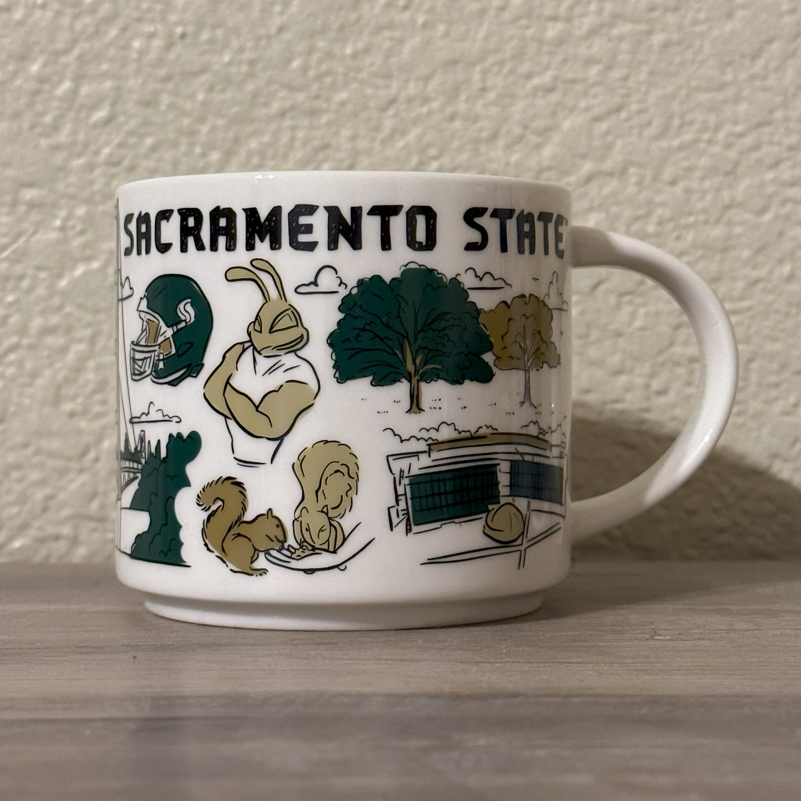

-

- Sacramento State Mug Archive
- insert description
Narrative
Starbucks’s Been There Series began in 2018 as an extension of their You Are Here series. The Been There Series features a custom mug for every state of the United States along with countless others from around the world. A more intricate subset of this series is the Campus Collection. Mugs of this collection are decorated with symbolical illustrations. Distinctive to other series, the design of each mug is hand drawn and the collection’s style is inspired by florals, faunas, and local icons.
The Been There Sacramento State mug is a captivating tribute to California State University, Sacramento, featuring its numerous points of attraction. Its color palette is a combination of the university’s official colors: Sac State green and Hornet Gold. The front of the mug features iconic attributes of Sacramento State. Two trees are showcased, symbolizing the significant amount of trees growing around campus, 3500. This great number gave Sacramento State’s title of “Tree Campus USA” in 2012. In addition to the trees, the university’s hornet mascot, Herky, is depicted right below the title of the mug and represents the university for the last several decades.
There are many other elements included on this mug.: the notable hand sign alongside Sac States’ slogan, “Stingers Up!”, rumbles the spirit of Sacramento State supporters; the gate with a similar outlook as the Golden Gate Bridge connects the campus with the neighborhood; the Phlagleblast Game Card represents the scavenger hunt around the University Union to assist with familiarization; the WELL engages the campus community. Overall, this Sacramento State mug offers visual journey through the university’s unique culture by encapsulating its essence.